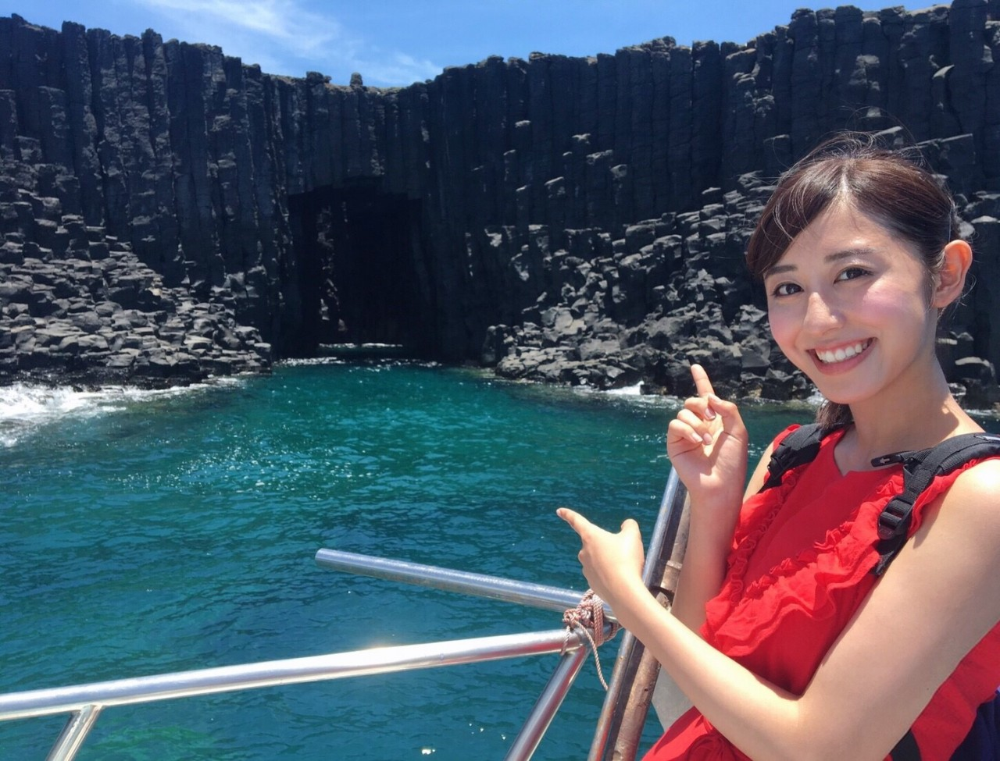
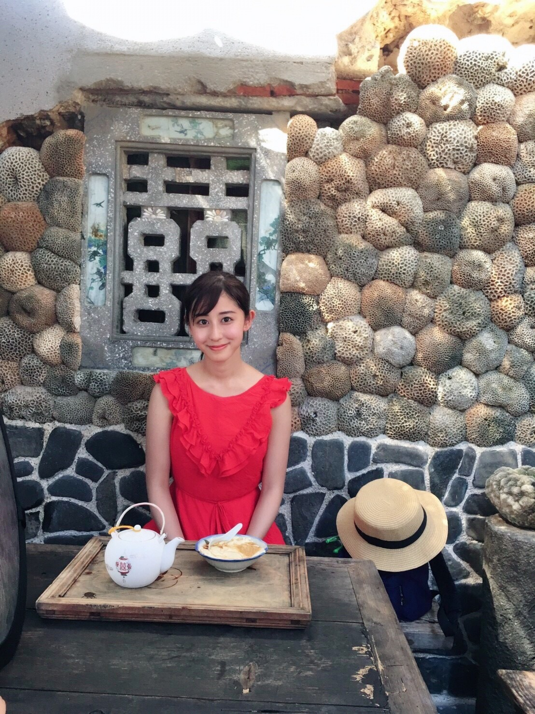
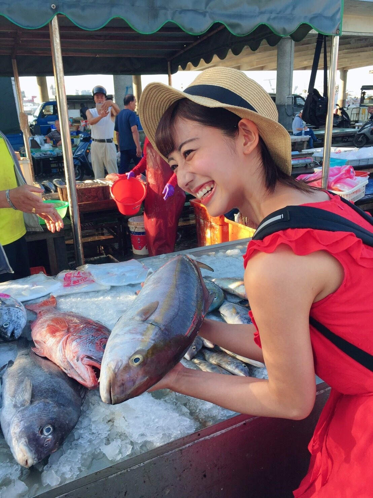

ちはるーむへようこそ
今日は嬉しい報告をさせてください！
7月29日土曜日の夜9時からの
「世界ふしぎ発見」に
ミステリーハンターとして出演します！！
子供の頃からの夢...！！
ついに叶いました...！！
本当に本当に嬉しいヽ(；；)丿



私は「台湾」に行ってきました〜！
台湾のイメージは、グルメやショッピングが
多いかと思いますが...
実は世界の有名な絶景に似た(!?)
スポットがあるのです！！
トルコのカッパドキアや、
ボリビアのウユニ塩湖、
イタリアの青の洞窟などなど...
私も初めて知る場所ばかりでした◎
台湾の奥深さと自然の豊かさを
皆さんに知っていただきたい！という思いで
レポートさせていただきました。
初めてのミステリーハンターなので
至らない点が多いかと思いますが...
どうか温かい目で見守っていただけると有難いですm(_ _)m
ついに本当の！笑
ミステリーハンター斎藤ちはる、
誕生の瞬間です！
大事なことなのでもう一回...
7/29(土) 21:00〜
TBS系列 「世界ふしぎ発見」
是非是非ご覧ください！
やっと告知できた♡
斎藤ちはる